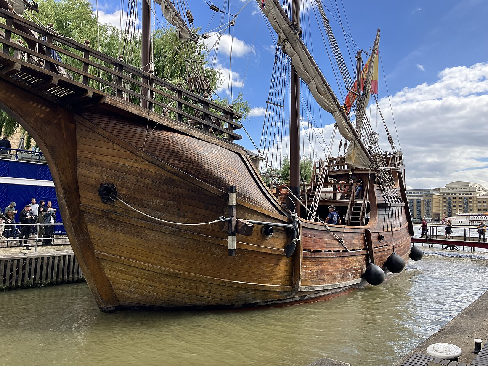
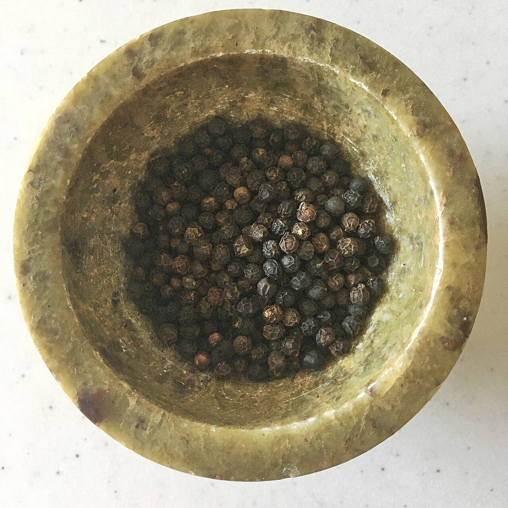
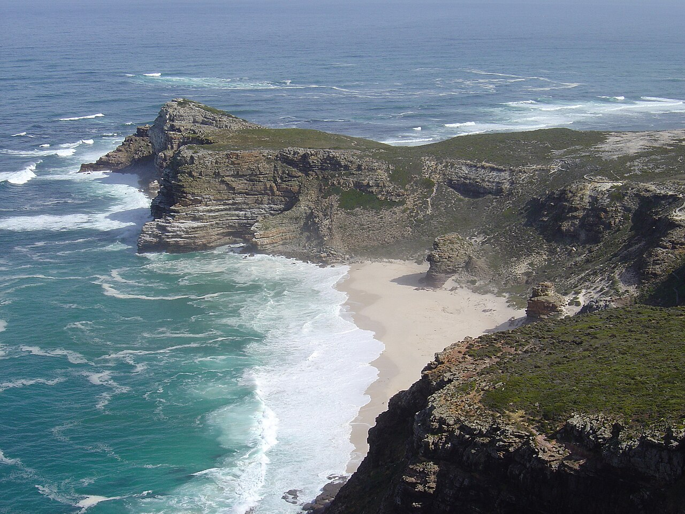
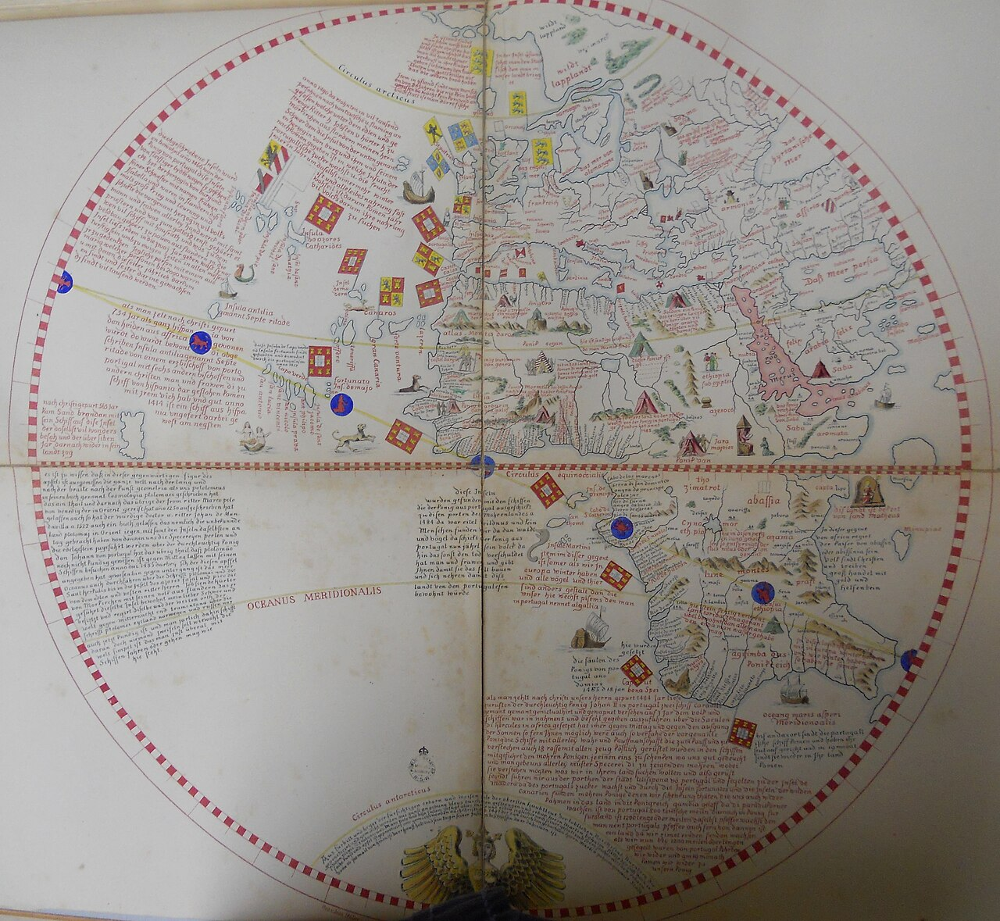
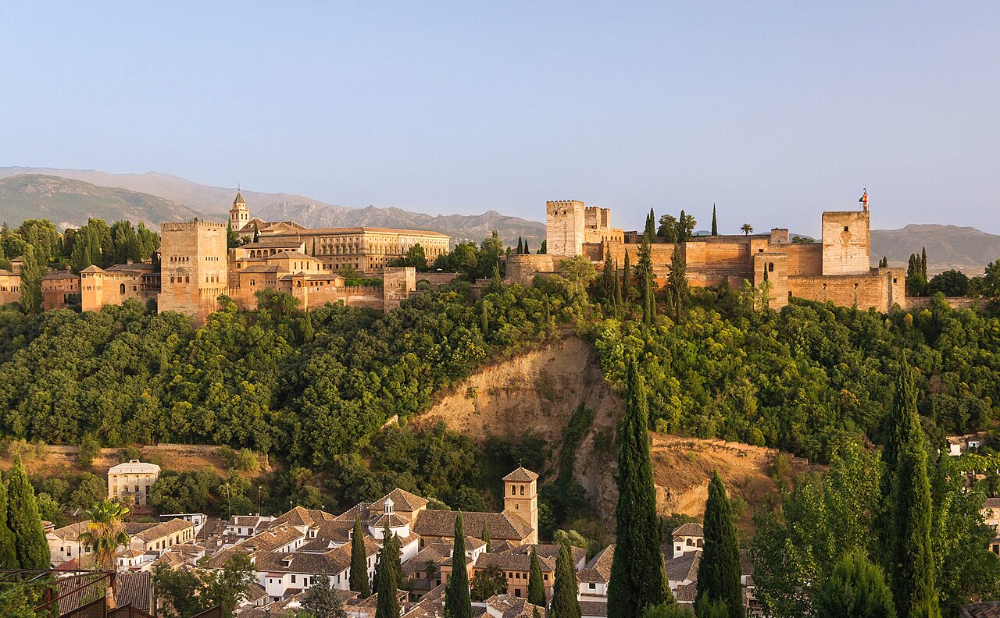
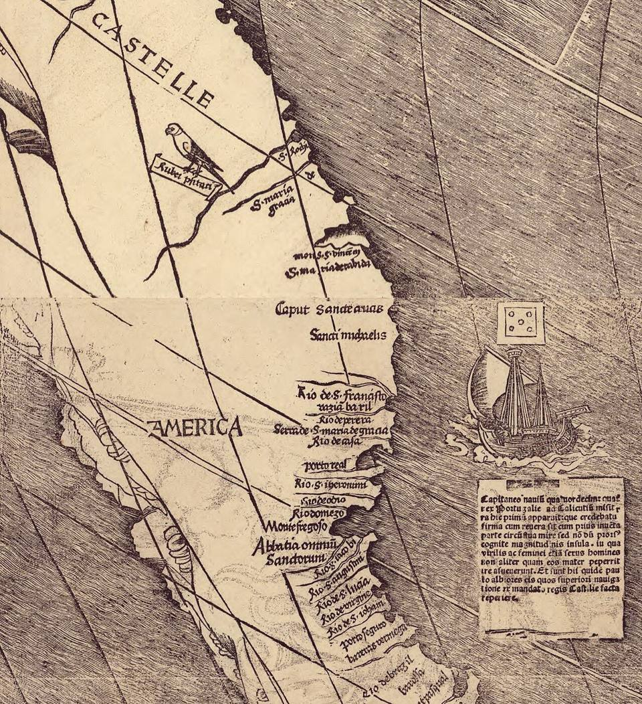
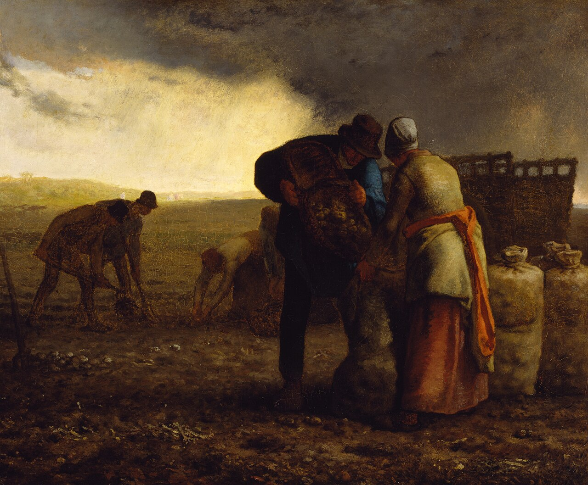

歴史・地理 History & Geographyコロンブスは、 なぜ 西へ 向かった？ 1492年、コロンブスはアジアをめざして、大西洋を西へ渡りました。地球が丸いことは、当時の学者も知っていました。まちがえていたのは、地球の大きさのほうです。東回りと西回りの道を地図と棒グラフでくらべながら、計算ちがいの航海が世界をつないだわけをたどってみませんか。
2026.11.11 UP 約8分で読める 文：SOMOSOMO編集部
写真（イメージ）：サンタ・マリア号の復元船／Jodiepedia（2025年、CC0）
Previously
前回は、アンデスに広がったインカ帝国が、病と兄弟の内戦で割れていたところへ、1532年、ピサロの168人に皇帝アタワルパを捕らえられた話でした。そのスペイン人たちの道を開いたのが、40年前、パロスの港から西へ出た3隻の船です。
大西洋の上、1492年10月12日の午前2時ごろ。ピンタ号の見張り番ロドリゴ・デ・トリアナが、行く手に陸を見つけて叫びました。船長は大砲を撃って、ほかの船に知らせます。カナリア諸島を出てから5週間、陸の見えない海を西へ進んだあとでした。
3隻を率いていたのは、イタリアのジェノヴァ生まれの船乗り、クリストファー・コロンブスです。
めざしていたのは、アジアでした。中国や日本、そして香辛料の採れる島々です。ところが、船の向かった先は東ではなく、西でした。アフリカを回る東の道が知られ始めていたのに、コロンブスはなぜ、だれも渡ったことのない西の海へ向かったのでしょうか 。
In a word
アジアの香辛料へ、東回りより近い西の道 があると、地球を小さく見積もった から。
01
The Spice Road
香辛料への 東の道には、 先に いる者がいた
コショウやショウガ、クローブ（丁子）は、インドや東南アジアで採れる香辛料です。ヨーロッパでは採れないので、遠くから運ぶしかありませんでした。インド洋ではイスラム教徒の商人の船が運び、地中海から先は、ヴェネツィアやジェノヴァの商人が受け持ちます。
第18話で見たように、モンゴル帝国の時代には、ヴェネツィアの商人マルコ・ポーロも東へ旅をしました。11〜15世紀、ヨーロッパとアジアの商いは、こうしたイタリアの港町の商人がほとんど独り占めしていました。
1453年には、第19話で見たように、コンスタンティノープルがオスマン帝国に落とされ、東の商いへの不安はさらに強まりました。

黒コショウの実 乾かした黒コショウの実です。写真の説明によれば、インド南西部のケーララ地方で採れたもの。このあと出てくるガマが着いた港カリカットも、この地方の海辺にありました。写真：Tellicherry Black Peppercorns ／Misterneedlemouse（2024年、CC0）
それより前、1415年から先頭を切っていたのが、ヨーロッパの西のはしの国ポルトガルです。この年、ポルトガルは北アフリカの港セウタを取りました。その戦いに加わった王子エンリケは、のちに「航海王子」と呼ばれ、アフリカの西の海岸を南へ下る船を送り続けます。
1434年、エンリケの船長の1人が、越えるのが難しいとされたアフリカ西岸のボジャドール岬を越えました。そして1487年ごろ、バルトロメウ・ディアスの3隻がリスボンを出て、翌1488年、アフリカの南のはしを回ります。インド洋に大西洋から入れることが、初めて確かめられました。

喜望峰 南アフリカの喜望峰を、近くの岬の上から見たところです。ディアスはこの南のはしの岬を「嵐の岬」と名づけましたが、インドへの海の道が開ける望みから、ポルトガル王が「喜望峰（よい望みの岬）」に改めました。写真：Cape of Good Hope (Zaian 2008) ／Zaian（2008年、パブリックドメイン）
02
A Smaller Earth
地球が丸いことは 知られていた。 まちがえたのは 大きさだった
そのころ、コロンブスはポルトガルの都リスボンに住んでいました。1476年、乗っていたジェノヴァの商船がポルトガルの沖で襲われ、岸に流れ着いたのがきっかけです。リスボンでは、弟のバルトロメオが地図をつくる店を開いていました。
「コロンブスの時代、地球は平らだと思われていた」という話を聞いたことがあるかもしれません。これは、のちに広まった俗説です（19世紀の伝記が広めたとされます）。地球が丸いことは古代ギリシャから知られ、中世の終わりのヨーロッパで、学のある人で平らだと考える人はほとんどいませんでした。
本当に意見が分かれたのは、地球の大きさです。コロンブスは、地理の本や、マルコ・ポーロの旅の本を読みこみ、書きこみを残しました。そして、昔の学者の見積もりの中から、地球が小さく、アジアが東へ長く伸びている数字ばかりを選んでいきます。
フィレンツェの天文学者トスカネッリも、西へ渡るほうがアフリカを回るよりアジアに早く着く、と考えていました。1474年にポルトガル王に手紙で勧め、1481年ごろには、コロンブスにも西回りの道を描いた地図を送ったとされます。
こうしてコロンブスは、アフリカの西の沖にあるカナリア諸島から日本までを、約4,400kmと見積もりました。本当の距離は約1万9,600kmです。マルコ・ポーロは、日本は中国のはるか東の沖にあると書いていました。日本が東にあるほど、西から行く道は短くなります。
Fig.01 カナリア諸島から アジアの東の端までの 距離
コロンブス 約4,400km
トスカネッリ 約5,700km
本当の距離 約1万9,600km
見どころは、カナリア諸島からアジアの東の端まで、コロンブスの見積もりが本当の距離の4分の1にも届かないこと。トスカネッリの数字はアジアの東の島々までです。出典：Christopher Columbus（Wikipedia 英語版）。
1484年ごろ、コロンブスはポルトガル王ジョアン2世に計画を持ちこみます。王の専門家たちは、距離が4倍ほども短すぎると見て、断りました。この判断は正しかったのです。王はすでに、アフリカを回る道に船を送り続けていました。
15世紀の船で、アジアまで本当の距離を進めるだけの食べ物と水を積むことは、できなかったとみられています。アメリカ大陸がなく、本当の距離の海だけが広がっていたら、コロンブスたちは途中で力つきていたことになります。

アメリカ大陸のない地球儀 1492年にドイツのニュルンベルクで仕上がった、いま残る最も古い地球儀（ベハイムの地球儀）の図です。描かれているのはヨーロッパとアフリカの側の半分です。左のはしの大西洋には島々が並び、その先はアジアの東の海につながると考えられていました。アメリカ大陸はありません。写真：Behaim Western Hemisphere ／マルティン・ベハイム（原図1492年、1853年の写し、パブリックドメイン）
03
1492
グラナダが 落ちた年、 女王は 西に賭けた
ポルトガルに断られたコロンブスは、隣のスペインへ移ります。スペインは、カスティーリャの女王イサベルとアラゴンの王フェルナンドの結婚で1つになった国でした。1486年5月、コロンブスは女王に計画を話しますが、ここでも学者たちの答えは、距離を小さく見すぎている、でした。
このころスペインは、イベリア半島に残ったイスラム教徒の最後の国、グラナダと戦っていました。コロンブスは王の陣地で待ち続けます。1488年には、もう一度ポルトガル王にも会いに行きましたが、うまくいきませんでした。まもなくディアスが、アフリカの南のはしを回って帰ってきたからです。
1492年1月、スペインはグラナダを落とします。それでも女王の相談役たちは計画をありえないと見て、コロンブスはフランスへ向かいました。女王の心を動かしたのは、王に仕える役人サンタンヘルです。ほかの国に計画を持っていかれる、と説き、お金を集める手伝いも申し出ました。
女王の使いは、町を出て10kmあまり進んでいたコロンブスを連れ戻します。4月17日の約束で、コロンブスは成功すれば「大洋の提督」の位を受け、新しい土地の総督となり、そこから上がる収入の1割を受け取ることになりました。

グラナダのアルハンブラ宮殿 1492年1月、イスラム教徒の最後の王国の都がここで、スペインの王と女王に明け渡されました。丘の上に、城壁と塔が連なっています。写真：Alhambra hill over Granada Spain ／Jebulon（2012年、CC0）
船乗り集めは難航しました。港町パロスで信頼される船主ピンソンの兄弟が加わって、ようやく人が集まります。船はサンタ・マリア号と、小さなピンタ号、ニーニャ号の3隻です。
8月3日にパロスを出た船は、まずカナリア諸島へ向かい、9月6日に西へ出ました。東から吹く貿易風（一年中ほぼ同じ向きに吹く風）に乗る作戦です。そして10月12日の朝、一行は、見張り番が見つけた島に上陸します。いまのバハマ諸島の島です。
住んでいた人々は、この島をグアナハニと呼んでいました。コロンブスはサン・サルバドル（聖なる救い主）と名づけ、スペインのものだと宣言します。インドに着いたと考えたコロンブスは、島々の人々をインドの人という意味の言葉で呼びました。
こうしてみると、コロンブスが西へ向かったわけは2つ重なっています。香辛料の国への東の道は、ヴェネツィアが押さえ、ポルトガルが先に進めていたこと。そして、西へ行けばアジアは近いと、地球を小さく見積もったこと。まちがった計算が、だれも渡らなかった海へ船を押し出したのです 。
Fig.02 西回りの コロンブスと、 東回りの ガマ
大西洋
インド洋
アフリカ
アメリカ大陸
パロス
リスボン
カナリア諸島
グアナハニ島
喜望峰
カリカット
コロンブスの出発地と着いた島
ガマの出発地と着いた港
そのほかの場所
コロンブス（1492年）
ヴァスコ・ダ・ガマ（1497〜98年）
見どころは、ガマの道がアフリカを大きく回るのに対し、コロンブスはまっすぐ西へ渡ったこと。コロンブスが着いた島は、アジアではありませんでした。道はおおよそです。地図は Natural Earth（パブリックドメイン）から作りました。
04
Not Asia
着いたのは、 アジアではない 「新しい世界」だった
コロンブスは、その後も3度、大西洋を渡りました。それでも、着いた土地がアジアの東のはしではない、とはっきり認めることはなかったとされます。カリブ海の島々をいまも「西インド諸島」と呼ぶのは、その名残です。
1494年、スペインとポルトガルは大西洋に南北の線を引き、西をスペイン、東をポルトガルのものと決めました（トルデシリャス条約）。
東回りの道も、続いて開かれました。1497年7月にリスボンを出たヴァスコ・ダ・ガマの船は、喜望峰を回ってアフリカの東の海岸を北へ進み、1498年5月20日、インド南西部のカリカットに着きます。ヨーロッパから海だけでアジアへ行く道が、初めてつながりました。
アジアではない、新しい大陸だと唱えたのは、フィレンツェ生まれの航海者アメリゴ・ヴェスプッチでした。いまのブラジルの海岸をたどったヴェスプッチは、そこを「新世界」と呼びます。1507年、ドイツの地図職人ヴァルトゼーミュラーは、彼の名をラテン語にした「アメリカ」を地図に書き入れました。

「AMERICA」の文字 1507年にヴァルトゼーミュラーがつくった世界地図の、いまの南アメリカにあたる部分です。陸の中ほどに、AMERICA の文字が見えます。この名が使われた、知られている限り最も古い例です。写真：Waldseemuller map closeup with America （部分）／マルティン・ヴァルトゼーミュラー（1507年、パブリックドメイン）
1519年にスペインを出たマゼランの船団は、1522年、地球を1周して帰ります。約270人のうち戻ったのは約40人。太平洋がどれほど広いかが、このとき初めてわかりました。
05
Two Worlds Meet
海が つながると、 作物も病も 銀も渡った
大西洋を船が行き来するようになると、それまで別々だった2つの世界の間を、作物や動物、病気が渡り始めます。歴史家のクロスビーが1972年に名づけた「コロンブス交換」です。
アメリカ大陸からは、じゃがいも、とうもろこし、トマト、さつまいもなどが世界へ広がりました。1500年より前、じゃがいもは南アメリカの外では育てられていませんでした。それがやがて、ヨーロッパの多くの人を養う主食になっていきます。

じゃがいもの収穫 フランスの画家ミレーが1855年に描いた絵です。掘ったじゃがいもを袋に詰めています。南アメリカの外では育てられていなかった作物が、350年あまりのちには、ヨーロッパの畑のありふれた風景になっていました。写真：The Potato Harvest ／ジャン＝フランソワ・ミレー（1855年、パブリックドメイン。ウォルターズ美術館蔵）
反対に、ヨーロッパやアフリカからアメリカ大陸へは、小麦や米、さとうきび、馬や牛や豚が渡りました。そして、天然痘やインフルエンザなどの病気も運ばれます。アメリカ大陸の人々は、これらの病気にかかったことがなく、体に備えがありませんでした。
アメリカ大陸の人口は、1492年に6,000万人を超えていたのが、1600年には600万人ほどまで減った、という2019年の研究の推計があります（推計には大きな幅があります）。
病気に加え、戦い、無理な働かせ方、飢えが重なりました。代わりに、ヨーロッパからの移民と、アフリカから無理やり連れてこられた人々が増えていきます。
Fig.03 大西洋を 渡ったもの （コロンブス交換）
アメリカ大陸から 世界へ
じゃがいも・とうもろこし・トマト
さつまいも・たばこ
銀（ポトシなどの鉱山から）
大西洋
ヨーロッパ・アフリカから アメリカ大陸へ
小麦・米・さとうきび
馬・牛・豚などの家畜
天然痘・インフルエンザなどの病気
見どころは、作物は両方向に渡ったのに、病気はおもにアメリカ大陸の側を襲ったこと。図は本文の内容をまとめたもので、渡ったものの一部です。
アメリカ大陸の銀は、のちに太平洋を越えてアジアまで渡ります。
コロンブス本人の評価は、いまも分かれています。10月12日を、2つの世界が出会った日として記念日にしている国々があります（名前や意味は国によって違います）。一方で、総督として入植者や島の人々への残酷な仕打ちを訴えられ（本人は否定しました）、1500年には鎖につながれてスペインへ送り返されました。
1990年代からは、先住民への暴力の始まりとして見直す声も強まっています。
06
By the Numbers
数字で見る コロンブスの航海
約 8年 ポルトガル王に計画を持ちこんだ1484年ごろから、出発の1492年まで、各国の王に支えを頼んだ年月Christopher Columbus（Wikipedia）から計算
4分の 1 コロンブスが見積もった、カナリア諸島からアジアの東の端までの距離（約4,400km）は、本当の距離（約1万9,600km）の4分の1以下だったChristopher Columbus（Wikipedia）から計算
10% 成功したら、新しい土地から上がる収入のうち、コロンブスが受け取ると約束された取り分Christopher Columbus（Wikipedia）による
Here's the Fun Part
ここが面白い！コショウを さがしに出て、 トウガラシを 持ち帰った
香辛料を求めて西へ出たコロンブスは、コショウもショウガもクローブも持ち帰れませんでした。代わりに航海の記録に書いたのが、島の人々がアヒと呼ぶ辛い実のことです。これは彼らのコショウで、コショウよりも値打ちがある、と記しています。
アヒとは、トウガラシのことでした。コロンブスたちは、コショウのように辛いこの実を、コショウにちなんだ名（ピミエント）で呼びます。トウガラシは1493年にスペインへ持ち帰られ、16世紀にはポルトガルの商人の船で、アフリカ、アラビア、そしてインドのゴア、スリランカ、マラッカへ運ばれました。
そこから先は早く、インドの料理や中国の四川の料理の味を大きく変えるほど広まります。朝鮮やタイの料理にも欠かせなくなり、日本にも16〜17世紀に伝わったとされます。インドの香辛料をめざした西回りの航海は、地球を回りこんで、インドの料理に新しい辛さを届けたのです 。
次にカレーやキムチ、七味唐辛子の辛さを感じたら、その赤い実が、コロンブスの計算ちがいの航海から始まって地球を半周してきたことを思い出してみてください。
To be continued
コロンブスの航海から25年後の1517年、ドイツの大学教授ルターが、教会の売る贖宥状（しょくゆうじょう。罪の罰が軽くなるとされた証書）を問う95か条の文を書きました。前に見た印刷機のおかげで、その年のうちにドイツで数百部が刷られます。西ヨーロッパに1つだった教会は、なぜ2つに割れたのでしょうか。
出典・参考
Christopher Columbus （Wikipedia 英語版）：1451年ジェノヴァ生まれ、1476年の難破とリスボン、弟バルトロメオの地図の店、読んだ本（プトレマイオス、ダイイ、マルコ・ポーロ）と書きこみ、1474年のトスカネッリの勧めと1481年の地図、カナリア諸島から日本まで2,400海里（約4,400km）の見積もりと本当の10,600海里（約1万9,600km）、マルコ・ポーロの日本の位置、トスカネッリの68度（約5,700km）、15世紀の船では本当の距離に足る食料と水を積めなかったこと、1484年ごろと1488年のジョアン2世、1486年5月1日のイサベル、1492年1月のグラナダ、サンタンヘル、10km あまり先から連れ戻したこと、サンタ・フェの協約（提督・総督・収入の1割。数字の欄）、8月3日の出発、10月12日の上陸とグアナハニ、極東に着いたという考えをはっきり捨てなかったこと、総督としての苛烈さの訴えと1500年の送還、評価が分かれていること、コロンブス交換の名Voyages of Christopher Columbus （Wikipedia 英語版）：1453年ののちに海の新しい道が求められたこと、ポルトガルの専門家が距離を4倍ほど短すぎると見たこと、スペインの委員会も距離を小さく見すぎていると判断したこと、パロスが2隻のカラベル船を出したこととピンソン兄弟、カナリア諸島に8月9日着、9月6日にラ・ゴメラ島を出発、貿易風、サン・サルバドル、黒コショウ・ショウガ・クローブを持ち帰らなかったことと航海記録のアヒ、西インド諸島の名Myth of the flat Earth （Wikipedia 英語版）：中世の学のある人々が地球を平らと考えたというのは近代の誤解であること、古代ギリシャから球形が知られていたこと、1828年のワシントン・アーヴィングの伝記と、委員会の場面がほとんど作り話であることPaolo dal Pozzo Toscanelli ・Erdapfel （Wikipedia 英語版）：トスカネッリの西回りの考え、ベハイムの地球儀が1490〜92年にニュルンベルクで作られた最古の地球儀で、アメリカ大陸が描かれていないことSpice trade ・Age of Discovery （Wikipedia 英語版）：11〜15世紀にヴェネツィアとジェノヴァがヨーロッパとアジアの商いを独占したこと、インド洋をイスラム教徒の商人が担ったこと、1453年のコンスタンティノープルの陥落がキリスト教世界への痛手と受け止められたこと、1415年のセウタ、エンリケ、1434年のボジャドール岬Prince Henry the Navigator ・Bartolomeu Dias （Wikipedia 英語版）：エンリケが発見の時代の始まりの中心人物とされること、ディアスが1487年7〜8月ごろにリスボンを出て1488年12月に戻ったこと、嵐の岬と喜望峰の名Vasco da Gama （Wikipedia 英語版）：1497年7月8日にリスボンを出発、1498年5月20日にカリカット（いまのケーララ州）に着いたことGranada War （Wikipedia 英語版）：1492年1月2日、グラナダの最後の王がアルハンブラ宮殿とともに町を明け渡したことTreaty of Tordesillas （Wikipedia 英語版）：1494年6月7日、カーボベルデ諸島の西370レグア（約2,100km）の線、ブラジルの東の部分がポルトガル側に入ったことAmerigo Vespucci ・Naming of the Americas （Wikipedia 英語版）：ヴェスプッチがブラジルを知られていない大陸と考え「新世界」と呼んだこと、1507年のヴァルトゼーミュラーの地図が「アメリカ」の名の知られている最古の例であることMagellan expedition （Wikipedia 英語版）：1519年9月20日に5隻・約270人で出発、太平洋を98日で横断、1521年4月のマゼランの死、1522年9月6日に1隻・約40人が戻ったこと、太平洋の広さが初めてわかったことColumbian exchange （Wikipedia 英語版）：1972年のクロスビーの命名、アメリカ大陸の作物（とうもろこし・じゃがいも・トマト・たばこ・さつまいも）と旧世界の作物・家畜（小麦・米・さとうきび・馬・牛・豚）、1500年より前にじゃがいもが南アメリカの外で育てられていなかったこと、天然痘Population history of the Indigenous peoples of the Americas （Wikipedia 英語版）：病気・戦い・社会の崩れが重なったこと、2019年の研究の推計（6,000万人超から1600年に600万人）、推計に大きな幅があることChili pepper （Wikipedia 英語版）・トウガラシ （Wikipedia 日本語版）：コロンブスたちが黒コショウのように辛いことからペッパー（ピミエント）と呼んだこと、ポルトガルの商人がアフリカ・アラビア・ゴア・スリランカ・マラッカへ運んだこと、1493年のスペインへの持ち帰り、インド・四川の料理を変え、朝鮮・タイの料理に欠かせないこと、日本への16〜17世紀の伝来Ninety-five Theses （Wikipedia 英語版）：1517年、ヴィッテンベルク大学の教授ルター、贖宥状、その年にドイツで数百部が刷られたこと（次の話へ）地図（Fig.02）：Natural Earth （パブリックドメイン）の海岸線から作成。船の道と町の位置はおおよそ
写真：CC0 またはパブリックドメイン。扉はロンドンに来たサンタ・マリア号の復元船（49 A wider view of the Nao Santa Maria ／Jodiepedia、2025年、CC0）。本文中の写真のクレジットは、それぞれの写真の下に記しています